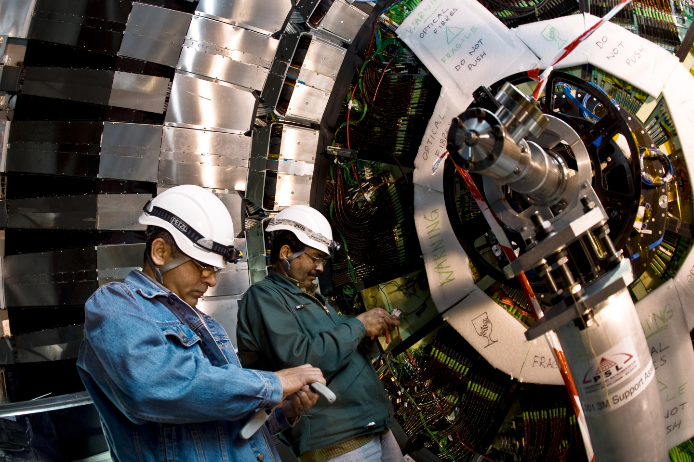
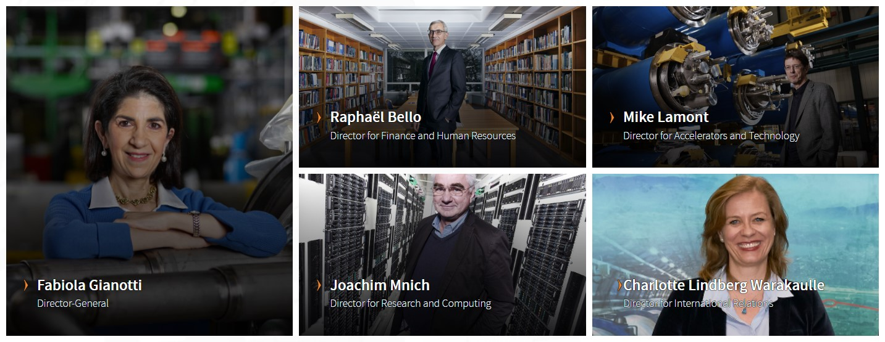

La cooperación entre naciones, universidades y científicos es el motor de la investigación del CERN.
 Técnicos trabajando en el interior del detector CMS en 2008 (Imagen: CERN)En 2017, más de 17 500 personas de todo el mundo trabajan juntas para superar los límites del conocimiento. Los miembros del personal del CERN, que son alrededor de 2500, participan en el diseño, la construcción y el funcionamiento de la infraestructura de investigación. También contribuyen a la preparación y el funcionamiento de los experimentos, así como al análisis de los datos recogidos para una vasta comunidad de usuarios, compuesta por más de 12 200 científicos de 110 nacionalidades, procedentes de institutos de más de 70 países.
 Algunos miembros del actual equipo ejecutivo